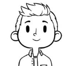

¿Cómo nació Aguacatiko?
Aguacatiko nace de la pasión y las ganas de ofrecer a nuestros clientes un producto delicioso,
exótico y saludable como es la gastronomía encontrada alrededor de los 5 continentes. A través
de Aguacatiko buscamos satisfacer los paladares más exigentes ofreciendo una cocina de
máxima calidad elaborada con las mejores materias primas y con el mismo cariño que se emplea
en la cocina artesanal.
Slogan
"Nunca es suficiente aguacate"
El lema nace de nuestra pasión por esta fruta que se ha hecho tan popular en los últimos años. Ya sea
bien por su estética como por su sabor, creemos que el aguacate es uno de los elementos de la cocina
por excelencia de este siglo en casi cualquier cultura así que para nosotros nunca, pero nunca de los
jamases será suficiente aguacate!
Adrián Martínez Quivén

Presidente y cofundador de Aguacatiko, es un consultor de gastronomía reconocido a nivel internacional
por su cocina de innovación. Ha llegado a trabajar con grandes cocineros que destacan en su mismo
sector como son Dabiz Muñoz o Ángel León.
Arianna Golindano Noguera
Empezó diseñando las portadas y post de Aiden al empezar su carrera como chef. Arianna es la
diseñadora creativa y web de Aguacatiko. Se encarga de mantener de forma estética, atractiva e
interactiva el blog para todos nuestros lectores.
Aiden Bugarin Carreira

Profesor de la prestigiosa academia Barilla y escritor de numerosos libros de cocina nominados a
diferentes premios en la categoría de cocina. Ha llegado a trabajar con diferentes personas de
renombre a nivel nacional e internacional.
Lucía Lázaro Visiedo
Cofundadora de Aguacatiko, dentro de nuestra web Lucía es la
encargada del diseño de las recetas junto a nuestros chefs. De esta manera, la comida es deliciosa,
nutritiva, saludable y sencilla de preparar.